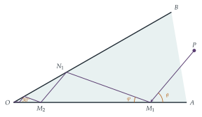

A particle moves on a smooth triangular horizontal surface \(AOB\) with angle \(AOB = 30^\circ\). The surface is bounded by two vertical walls \(OA\) and \(OB\) and the coefficient of restitution between the particle and the walls is \(e\), where \(e < 1\). The particle, which is initially at point \(P\) on the surface and moving with velocity \(u_1\), strikes the wall \(OA\) at \(M_1\), with angle \(PM_1A = \theta\), and rebounds, with velocity \(v_1\), to strike the wall \(OB\) at \(N_1\), with angle \(M_1N_1B = \theta\). Find \(e\) and \(\dfrac{v_1}{u_1}\) in terms of \(\theta\).
The motion continues, with the particle striking side \(OA\) at \(M_2, M_3, \ldots\) and striking side \(OB\) at \(N_2, N_3, \ldots\). Show that, if \(\theta < 60^\circ\), the particle reaches \(O\) in a finite time.
The hook
Zeno of Elea argued that you can never reach a wall: first you must cover half the distance, then half of what remains, and so on for ever. The resolution, that infinitely many steps can take a finite total time, is an infinite series that converges. This question is Zeno’s paradox made real: a puck sliding into the corner of a wedge bounces off the walls infinitely many times, yet arrives at the corner after a finite time.
Nature does this too. A ball bouncing on the floor with a coefficient of restitution less than \(1\) bounces infinitely often in a finite time and then comes to rest. In computer simulations of granular materials (sand, grain, snow) this “inelastic collapse” is a real difficulty: the computer is asked to handle infinitely many collisions in a finite time.
Before you start
When a particle hits a smooth wall with coefficient of restitution \(e\), what happens to the component of velocity along the wall? And the component perpendicular to it?
A smooth wall exerts no force along itself, so the component of velocity parallel to the wall is unchanged. The perpendicular component is reversed and multiplied by \(e\). So if the particle arrives at angle \(\alpha\) to the wall and leaves at angle \(\beta\), then \[\tan\beta = e\tan\alpha,\] and since the parallel component is unchanged, (speed in)\(\cos\alpha\) = (speed out)\(\cos\beta\).
Working it through
Stage 1 The angle of departure
The particle arrives at \(M_1\) at angle \(\theta\) to the wall \(OA\) (measured on the side away from \(O\)). At what angle \(\varphi\) to \(OA\) does it leave? Use the triangle \(OM_1N_1\) to find \(\varphi\) in terms of \(\theta\).
The particle leaves \(M_1\) heading towards \(O\)’s side, at angle \(\varphi\) to the wall, so the angle \(OM_1N_1\) is \(\varphi\). In triangle \(OM_1N_1\), the angle at \(O\) is \(30^\circ\). At \(N_1\), the angle \(M_1N_1B\) is \(\theta\) and \(O\), \(N_1\), \(B\) lie on a line, so the angle \(ON_1M_1\) is \(180^\circ - \theta\). The angles of the triangle add to \(180^\circ\): \[30^\circ + \varphi + (180^\circ - \theta) = 180^\circ, \qquad\text{so}\qquad \varphi = \theta - 30^\circ.\] (In particular, \(\theta > 30^\circ\).) The restitution law \(\tan\varphi = e\tan\theta\) then gives \[e = \frac{\tan(\theta - 30^\circ)}{\tan\theta},\] and conservation of the parallel component, \(u_1\cos\theta = v_1\cos\varphi\), gives \[\frac{v_1}{u_1} = \frac{\cos\theta}{\cos(\theta - 30^\circ)}. \qed\]
Stage 2 The pattern repeats
At \(N_1\), the particle arrives at angle \(\theta\) to the wall \(OB\), measured on the side away from \(O\). Compare this with its arrival at \(M_1\). What happens next?
The situation at \(N_1\) is the mirror image of the situation at \(M_1\): the particle meets a wall at angle \(\theta\), on the side away from \(O\). So it leaves at angle \(\theta - 30^\circ\) and meets \(OA\) again at angle \(\theta\), and so on for ever. Every bounce is a scaled copy of the first. Each triangle \(OM_kN_k\), \(ON_kM_{k+1}\), … is similar to the one before (Figure 10.5.1), and the speed is multiplied by the same factor at every bounce.
Stage 3 Two ratios
By what factor \(\rho\) does the distance from \(O\) shrink from one bounce to the next? By what factor \(k\) does the speed shrink? So by what factor does the time for each leg shrink?
The sine rule in triangle \(OM_1N_1\) gives \[\rho = \frac{ON_1}{OM_1} = \frac{\sin\varphi}{\sin(180^\circ - \theta)} = \frac{\sin(\theta - 30^\circ)}{\sin\theta}.\] All lengths in the next triangle are \(\rho\) times those in this one, so each leg of the path is \(\rho\) times as long as the previous leg. The speed is multiplied by \(k = \frac{\cos\theta}{\cos(\theta - 30^\circ)}\) at each bounce. Time is length divided by speed, so each leg takes \[\frac{\rho}{k} = \frac{\sin(\theta - 30^\circ)\cos(\theta - 30^\circ)}{\sin\theta\cos\theta} = \frac{\sin(2\theta - 60^\circ)}{\sin 2\theta}\] times as long as the previous one.
Stage 4 A geometric series
The total time is \(T_1(1 + r + r^2 + \cdots)\), where \(T_1\) is the time for the first leg and \(r = \frac{\sin(2\theta - 60^\circ)}{\sin 2\theta}\). This is finite if \(0 < r < 1\).
When is \(\sin(2\theta - 60^\circ) < \sin 2\theta\)? Use the identity \(\sin X - \sin Y = 2\cos\tfrac12(X + Y)\sin\tfrac12(X - Y)\).
\[\sin 2\theta - \sin(2\theta - 60^\circ) = 2\cos(2\theta - 30^\circ)\sin 30^\circ = \cos(2\theta - 30^\circ),\] which is positive when \(2\theta - 30^\circ < 90^\circ\), that is, when \(\theta < 60^\circ\). And \(r > 0\) since \(\theta > 30^\circ\). So for \(30^\circ < \theta < 60^\circ\) the series converges: the particle makes infinitely many bounces, its distance from \(O\) shrinks by the factor \(\rho < 1\) each time, and it reaches \(O\) after the finite time \(\frac{T_1}{1 - r}\).■

Looking back
Self-similarity. Once one bounce was understood, every later bounce was a scaled copy, so the whole infinite process reduced to two ratios.
Combine ratios correctly. Distance shrinks by \(\rho\) and speed by \(k\), so time shrinks by \(\rho/k\).
Infinitely many events, finite total. A geometric series with ratio less than \(1\) converges.
What’s really going on
When \(\theta \geq 60^\circ\)
At \(\theta = 60^\circ\), the ratio is exactly \(1\): every leg takes the same time, and the particle never reaches \(O\), although it gets ever closer. (The speed and the leg lengths both shrink by the same factor.) For \(\theta > 60^\circ\), the legs take longer and longer. In every case the particle approaches \(O\) and makes infinitely many bounces; only for \(\theta < 60^\circ\) does it get there in finite time. The value \(e = \tan 30^\circ/\tan 60^\circ = \frac13\) is the dividing line.
Bouncing balls and inelastic collapse
The simplest example of the same phenomenon: a ball dropped onto a floor rises to height \(e^2H\), then \(e^4H\), and so on. The time between bounces is proportional to the speed at each bounce, which shrinks by the factor \(e\), so the total time is a geometric series: with \(T_0 = \sqrt{2H/g}\) the time of the first fall, the ball stops bouncing after \[T_0 + 2eT_0 + 2e^2T_0 + \cdots = T_0\,\frac{1 + e}{1 - e}.\] Infinitely many bounces, and then rest. In 1992 Sean McNamara and William Young showed that the same thing happens in simulations of many inelastic particles in a line: a group of them can undergo infinitely many collisions in a finite time, an “inelastic collapse”. Simulations of sand and granular flows must include special rules to avoid it, and the phenomenon helps explain why granular gases spontaneously form clusters.
Zeno’s paradoxes, from around 450 BC, troubled philosophers for two thousand years. The mathematical resolution, that an infinite sum can have a finite value, was made precise only in the nineteenth century, when Cauchy, Weierstrass and others defined convergence by means of limits (the subject of Chapter 2). The surprising feature of this question is that the process is physically infinite: there really are infinitely many collisions, in a finite time. Mathematicians studying billiards in polygons and the motion of colliding particles call such behaviour a Zeno phenomenon, and it is one of the subtleties in proving that systems of colliding hard spheres have well-defined motions for all time.
The thinking skill
When a process repeats with a constant scale factor, the total of any additive quantity (time, distance, energy) is a geometric series. Decide convergence from the ratio.
Here the key was to find the right ratio: not the ratio of distances, nor of speeds, but of times. At university, the same reasoning governs the convergence of iterative methods, the theory of fractals, and the analysis of algorithms that repeatedly halve a problem.
Try this next
The total distance. Show that the total distance travelled from \(M_1\) to \(O\) is finite for every \(\theta\) between \(30^\circ\) and \(90^\circ\), and find it in terms of \(OM_1\) and \(\theta\).
Other wedges. Repeat the question for a wedge of angle \(\alpha\) instead of \(30^\circ\). Show that \(\varphi = \theta - \alpha\), and find the condition on \(\theta\) for the particle to reach \(O\) in a finite time.
Elastic walls. If \(e = 1\), can the particle ever reach \(O\)? (Hint: reflect the wedge repeatedly in its walls, so that the path becomes a straight line. How many copies of a \(30^\circ\) wedge fit round \(O\)?)
The bouncing ball. A ball is dropped from height \(1\) m with \(e = 0.8\). How long does it bounce for, and how far does it travel in total? (Take \(g = 9.8\) m s\(^{-2}\).)
Further reading
David Morin, Introduction to Classical Mechanics (Cambridge University Press), Chapter 5. Includes several problems on bouncing balls and infinite sequences of collisions.
Sean McNamara & William Young, “Inelastic collapse and clumping in a one-dimensional granular medium”, Physics of Fluids A 4 (1992).
Serge Tabachnikov, Geometry and Billiards (American Mathematical Society; free online). The mathematics of billiards, including the unfolding trick in the exercises.